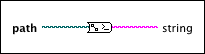

Path to Command Line String VI
Owning Palette: Path/Array/String Conversion Functions
Requires: Base Development System (macOS)
Converts the path into a string that describes that path. This VI formats the path string with the standard command line path format of the current platform. Use this VI to format paths before sending commands to the command line of the current platform.

 Add to the block diagram Add to the block diagram |
 Find on the palette Find on the palette |